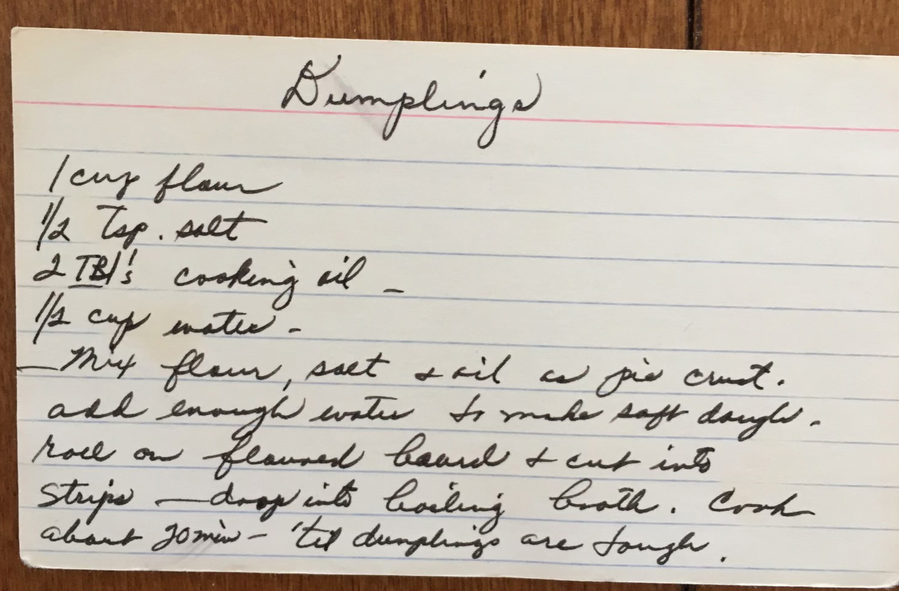

"Dumpling" is a word that covers a huge family of dishes around the world — Chinese jiaozi, Polish pierogi, Italian gnocchi, Jewish kreplach — but these are specifically rolled-and-cut dumplings, the flat noodle-like strips that go into a pot of simmering broth or stew. That style is the signature of the American South and Appalachia, where it's the foundation of chicken and dumplings (sometimes called "slick dumplings" or "slicks" to distinguish them from the puffy biscuit-drop kind common further north). The technique traveled with Scots-Irish and German settlers in the 18th and 19th centuries and stuck.
What's striking on this card is how spare it is — four ingredients, no leavening, treated "as pie crust." That's the giveaway that these are slicks rather than biscuit dumplings: no baking powder, just a tight dough rolled thin and cut into ribbons. The last line, "cook 'til dumplings are tough," is delightfully counterintuitive but correct for this style — these are supposed to be chewy and a little dense, soaking up the broth, not light and fluffy.